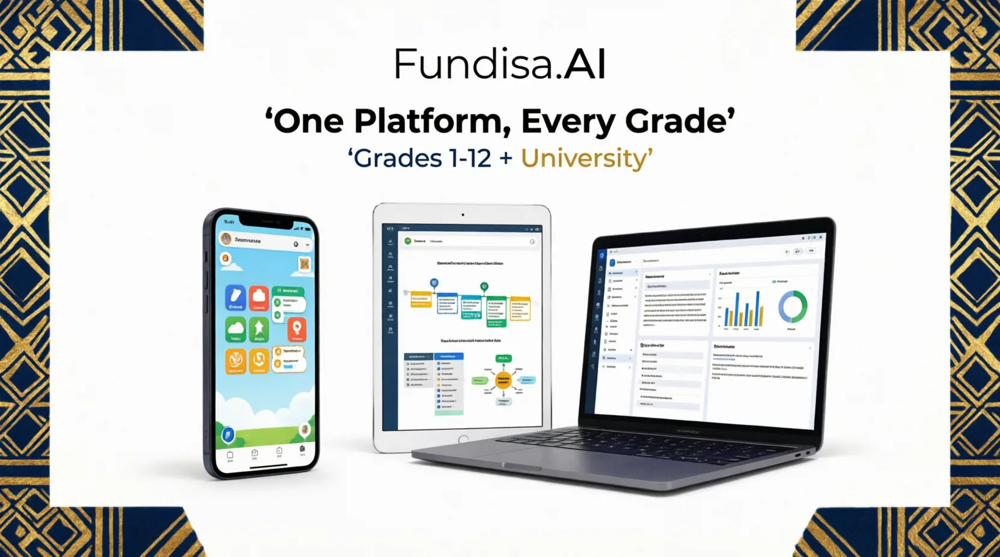

The admin weight
Evenings disappear into plans, rubrics and reports. Every hour returned to a teacher is an hour returned to a learner.
Thuto Technology Ecosystem · South Africa
One ecosystem, ten apps, eleven official languages. Teacher-steered, CAPS-aligned, POPIA-compliant, offline-first — from Grade 1 to university.
01 · The Need
Teachers carry crushing admin loads while learners study in languages that aren't theirs. ThutoTech closes both gaps with evidence, not anecdote.
Evenings disappear into plans, rubrics and reports. Every hour returned to a teacher is an hour returned to a learner.
Learners understand best in the language they dream in. Content and caregiver notes rarely follow them home — ours does.
Support decisions drift on intuition. Comprehensive, data-grounded reports make need visible — and fundable.
AI drafts. The teacher decides. Human review stays at the centre of every learning workflow.
ThutoTech design principle
Eleven official languages. One CAPS-aligned workflow designed around South African classrooms.
ThutoTech design principle
Offline-first by design, with consent logged and data kept inside the governed perimeter.
ThutoTech design principle
Support plans connect assessment evidence, caregiver guidance and the next learning action.
ThutoTech design principle
One ecosystem shared across teaching, exams, commerce, research and learner wellbeing.
ThutoTech design principle
Grades 1–12 + University. Live walkthrough of the Teacher Studio, learner app and home-language reports — with Q&A for parents and teachers.
Fundisa AI · Flagship Platform
Grades 1–12 + University. A playful learner app, a NotebookLM-style Teacher Studio, and a dashboard that keeps every classroom decision with the teacher.

The Four Engines
Scroll the studio. AI drafts; the teacher decides; CAPS guards every line.
NotebookLM-style workspace: source-grounded drafts of lessons, assessments and comprehensive support reports.
Automate repetitive drafting while keeping review, approval and classroom judgement with the teacher.
Every generation maps to curriculum and assessment policy before it reaches a classroom.
Eleven official languages, zero connectivity required. Content travels home in the language the home thinks in.
Grades 1–12 + University. Bring your toughest class; leave with a drafted plan.
MatricMate AI · Grade 12 Completion
Past-paper practice, adaptive study plans and NSC readiness scoring that tells the truth early enough to act on it.
StudentMart SA · Commerce Layer
Devices, data bundles, stationery and study materials — curated for South African learners, with transparent settlement.
Thuto Research Studio · Evidence Layer
Three terms of assessment data in; one twelve-page, teacher-steered support plan out — with caregiver guidance in the home language.
Report anatomy
Mental Health Central · Wellbeing Layer
Screening signals, referral pathways and caregiver guidance — so no learner's struggle stays invisible in the data.
Light-touch wellbeing check-ins embedded in the learner app, scored against validated scales.
Psychoeducation modules and coaching pathways for learners, teachers and caregivers.
Warm handoffs to school-based support teams and provincial resources, with consent logged.
Ethical Sovereign AI
Recognised at WAIC 2026 as the First Ethical Sovereign AI from South Africa, Fundisa.ai runs on three non-negotiable pillars — enforced on every plane of the ecosystem.
POPIA-compliant by architecture: consent logged, data resident, learner records never leave the governed perimeter.
Home-language parity across eleven official languages; bias audits per release; teacher override on every output.
Human-in-the-loop gates, separate money-lane audits, and an evidence return loop that publishes what it learns.
Official App Directory
Open the deployed workspaces that connect teaching, learning, research, community and learner support across South Africa.
Campus workspace
Open app 02Community workspace
Open app 03AI learning academy
Open app 04Research and evidence workspace
Open app 05Community workspace
Open app 06Teaching and learning workspace
Open app 07Work and productivity workspace
Open app 08Legal workspace
Open app 09Grade 12 exam readiness
Open app 10Learner commerce
Open appThe Ecosystem & Brand System
Touch a node. Every platform shares one governance layer, one data ethic, one design system. The official directory connects ten deployed apps.
One platform, every grade: Teacher Studio, learner mobile app, multilingual generation and offline-first sync — Grades 1–12 + University.
Enter platformDesign System · applied on every page
Space Grotesk — display, headings, numerals.
Inter — body, UI, captions.
Scale: 92 / 58 / 36 / 24 / 17 / 15 / 12. Letter-spacing −1.5% on display, +14–32% on kickers.
Ease-out cubic-bezier(.22,1,.36,1) · ease-in-out (.65,0,.35,1). Durations 160ms micro / 500ms element / 850ms chapter. Draw-on-view strokes, magnetic buttons, marquee 46s, band pan 56s. Reduced-motion = full static design.
Rule of one: one emblem, one Ndebele band, one icon set per viewport. Parent wordmark in global nav; sub-brand marks in content only. Clear space = cap height. Never recolor, outline or stack logos.